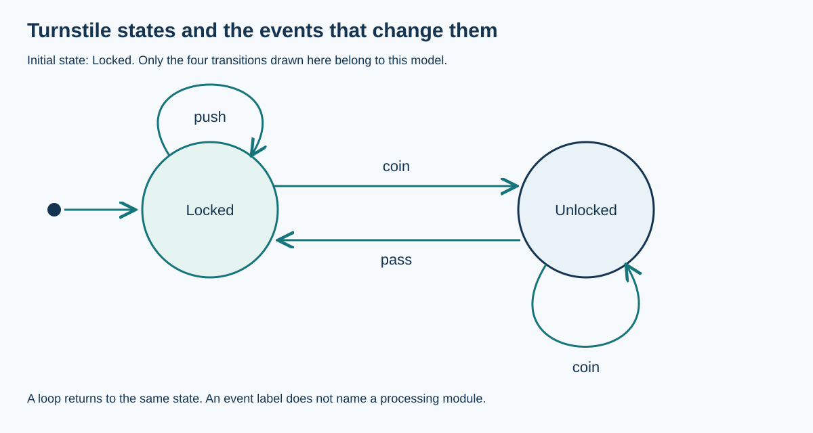

Document persistent states and transitions
Visual overview
A turnstile has two persistent states

Visual transcript
- Locked + coin → Unlocked.
- Locked + push → Locked.
- Unlocked + pass → Locked.
- Unlocked + coin → Unlocked.
Model persistent conditions
A state is a condition a system can remain in while it waits for an event. A state-transition diagram documents possible changes from those conditions. The initial indicator supplies a starting state; a directed arrow specifies the source and destination of a transition, and its label tells the reader which event causes it.
Interpret the supplied model
The turnstile begins Locked. A coin moves it to Unlocked; passing moves it back to Locked. A push while Locked and another coin while Unlocked have explicit self-loops. A self-loop consumes an event without changing the state: it does not imply that the system briefly visits another state.
Separate state, event and action
A state such as Unlocked describes the system, whereas a module such as CalculateCost names a responsibility. An event such as coin is something that happens to the system. Keeping these roles separate prevents a state diagram from becoming a misleading list of instructions.
Core explanation · Exam essentials
- Use state names for persistent conditions and labelled arrows for permitted changes.
- Read the initial indicator and explicit self-loops before tracing events.